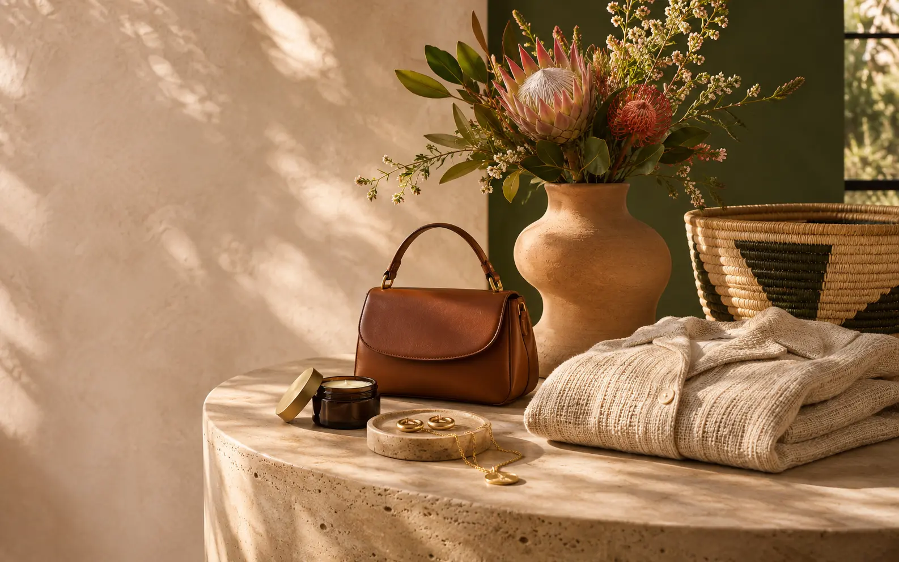

Great businesses
deserve to be found.
Foundly started with a simple belief: independent businesses deserve a platform as thoughtful and ambitious as the people behind them.
OUR WHY / FOUNDLY
THOUGHTFUL FINDS, REAL POSSIBILITYWe're for the
We're for the
independent
spirits.
For the small business turning big ideas into real things. For the shopper who wants to know where their favourites come from. For the joy of finding something unexpected and feeling connected to its story.
Our first chapter is focused on Gauteng, with ambitions to open the door wider across South Africa.
Grow with Foundly ↗Come find
your people.
Whether you're here to sell or to discover, there's a place for you.
Explore the concept ↗